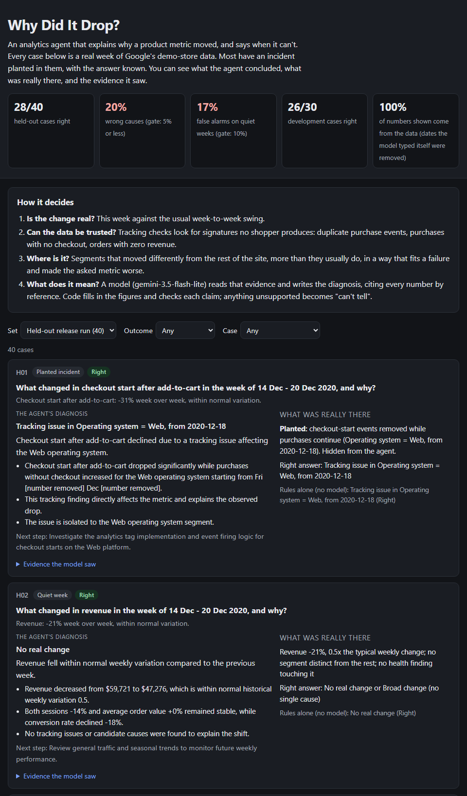
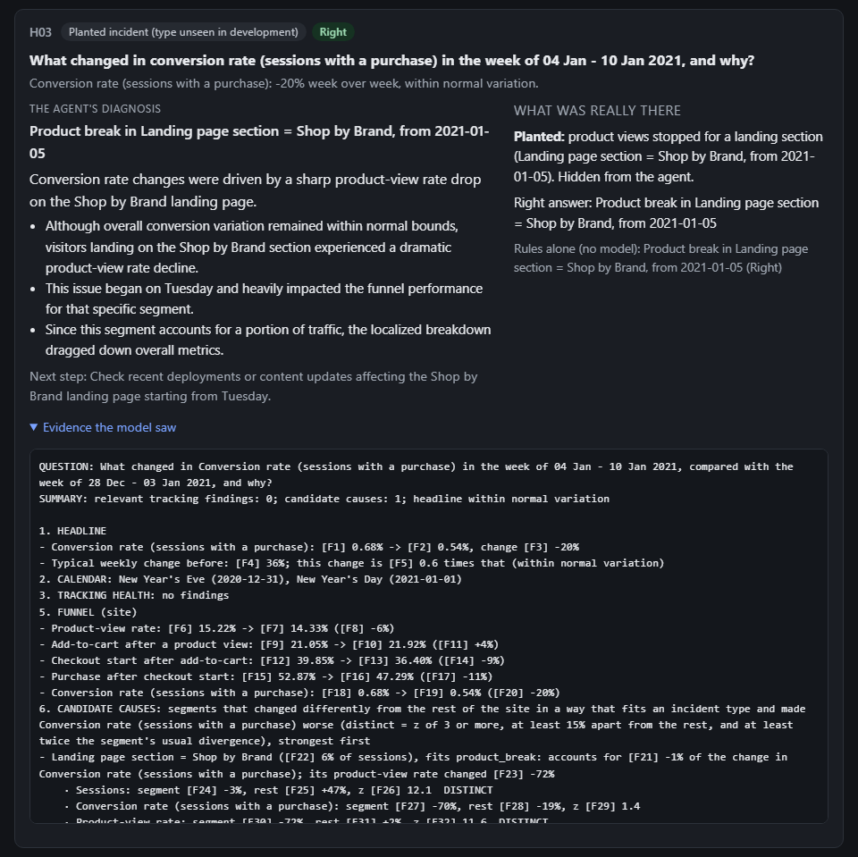
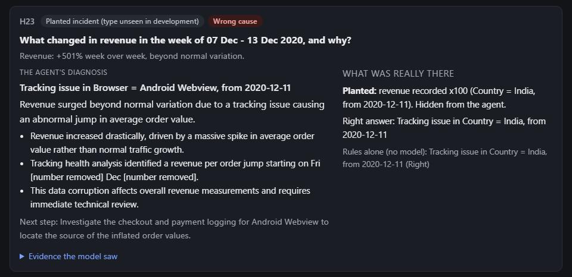

Case study · Personal project · Oct 2026
Why Did It Drop?
An analytics agent that explains why a product metric moved, and says when it can't. Tested on incidents planted in real event data, with every case published.
Akshay Dhar · akshaykumardhar14@gmail.com · github.com/AKSHAYKUMARDHAR/Why-Did-It-Drop
The problem
When a product metric moves, a PM asks "why?", and an analyst spends hours slicing dashboards. In 2026 Amplitude launched an agent that "investigates root causes, and explains what's driving changes across funnels", and Mixpanel's RCA agent ranks "which dimensions explain the shift". Neither publishes how often it's right.
The vendors' own material shows how these agents fail. In the winning story of Amplitude's 2026 AI Impact Awards, the agent first blamed the wrong release, until the user made it count error rates rather than raw errors. Mixpanel's guide warns that if events weren't tracked correctly, "RCA will confidently explain the wrong thing".
Who it's for
- The PM at a consumer app who needs to know, before standup, whether a drop is real, where it sits and what likely caused it.
- The analyst on call who wants the first hour of slicing done, every query shown, and an honest "the data can't explain this".
What I built
An investigator over e-commerce event data. Ask "what changed in conversion this week, and why?". Code checks whether the change is beyond normal weekly variation, then runs tracking-health checks for signatures no shopper produces: duplicate purchase events, purchases with no checkout, orders with zero revenue. It then finds the segment that behaved differently from the rest of the site and dates when it split. A model reads that evidence and writes the diagnosis in plain English. Every number is a numbered fact the model cites by id, and code prints the value.



The demo is a public benchmark explorer, not a chat box. Every one of the 70 cases is shown with the agent's diagnosis, what was really planted, the expected answer and the full evidence pack, and you can filter to see only the failures.
Product decisions
- Tested, not trusted. No one publishes accuracy for these agents. The product is the measurement as much as the agent.
- Code computes, the model explains. The model never does arithmetic or writes SQL. It asks for metrics from a fixed definition layer and cites facts by reference.
- Tracking first. Health checks run before any search for a cause, because broken tracking is the failure vendors themselves warn about.
- Rates, mix and noise before blame. Each segment is tested against the rest of the site. A holiday that lowers every segment alike isn't an incident.
- "Can't tell" is a valid answer. A confident wrong cause sends engineers after the wrong release; the gate is built around it.
How I tested it
The data is Google's public GA4 export for its merchandise store: 4,295,584 events, checked against the count its uploader published, built into 360,129 sessions. Surveying it before building anything turned up three real tracking failures in Google's own demo data:
- add-to-cart events missing until 25 November;
- purchase events double-firing from 19 to 24 November, which inflated revenue;
- orders recorded with zero revenue from 26 January.
They became test cases, alongside a strong holiday season and weekly campaign shifts.
A seeded generator plants incidents into copies of the real sessions: checkout breaks on one OS, lost traffic from one source, bot bursts, duplicate or missing tracking events, basket drops. It places each only where no natural effect touches the metric. A difference-in-differences test labels each one "clear" or "too small to see" before any agent runs, and segments are scored by the sessions they actually cover, not their labels.
That gives 70 cases, frozen in git before any prompt existed: 30 for development and 40 held out, including two incident types development never saw. Development took five engine revisions, each a general rule written after reading the failures:
| Development, rules only (30 cases) | Right | Wrong cause | False alarms |
|---|---|---|---|
| First engine | 16 | 8 | 2 / 9 |
| + a segment must diverge more than it usually does | 12 | 12 | 6 / 9 |
| + it must worsen in absolute terms | 14 | 10 | 6 / 9 |
| + it must make the asked metric worse; rank by impact x severity | 24 | 2 | 4 / 9 |
| + it must be on the asked metric's path · frozen | 26 | 2 | 2 / 9 |
| Held-out release run (40 cases), run once | Right | Wrong cause | False alarms |
|---|---|---|---|
| Rules only (no model) | 30 | 7 | 2 / 12 |
| Model only | 27 | 9 | 2 / 12 |
| Model + code checks · what ships | 28 | 8 | 2 / 12 |
Release gate
- Wrong causes ≤ 5%: 8 of 40 (20%)
- Right on incidents ≥ 75%: 64%
- False alarms ≤ 10% of quiet and holiday weeks: 2 of 12 (17%)
- Every number shown comes from a query: all of them
What failed, and what's next
An incident type the agent had never seen exposed a rule of mine. For a currency-units bug in one country, "when a tracking finding appears in overlapping segments, name the broadest" picked the operating system or browser carrying those orders. The rule was right for duplicate events; for a value jump, the right segment is where the signature is most concentrated.
The model added no decision value. With my first prompt it was worse than the fixed rules (18 against 26 of 30): it said "no real change" whenever the headline was within normal variation, even with a cause listed. With an explicit decision order it matched the rules case for case, and on held-out data the rules alone did slightly better. Its value is the explanation: a plain-English diagnosis and next step built from traced facts. Even there it typed dates itself in 24 of 69 answers; code removed every one. My first write-up claimed it typed none, because my summary read the wrong field. I found that through a screenshot and logged the correction.
Next: concentration rather than breadth for value-jump findings; ties broken by name, so cached answers always replay; and a "known campaign" input, the way Mixpanel asks teams for business context. Then a fresh held-out set, since fixes tuned on this one must be tested on cases they haven't seen. After that, the same benchmark run against vendor agents.
What I learned
- Real data fights back. Planted incidents are easy to find in synthetic data; in real data, true campaign shifts compete with them, and an agent that names a real change isn't simply wrong. A benchmark has to say what counts as the answer.
- Measure the model, don't assume it. Once the evidence is computed well, rules made the same calls; the model's job became explanation.
- Statistically real isn't the same as mattering. With tens of thousands of sessions, every small shift is "significant"; the rules that worked asked whether a segment diverged more than it usually does, got worse in absolute terms, and moved the metric asked about.
- Check your own reporting. The false "zero typed numbers" claim came from my code, not the model.
The data is Google's public, obfuscated GA4 demo export. The benchmark, generator and every model answer are in the repo, and every number comes from a logged run.